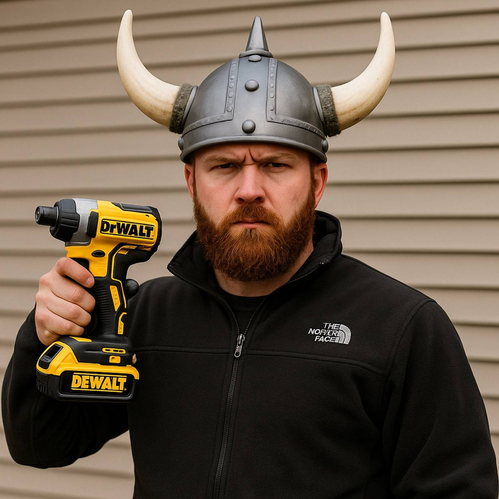

TorqueMaster spring failures fixed right. Genuine parts, factory-warranty installations, and a technician who knows these doors inside and out.
Viking Garage Door is an authorized Wayne Dalton dealer serving Spartanburg County. That means factory-direct doors, genuine parts, manufacturer warranty on new installations, and a technician who knows these doors inside and out.
Wayne Dalton doors are everywhere in Upstate South Carolina — thousands of homes in Spartanburg, Boiling Springs, Greer, and Inman were built with them. They're solid doors, but they have one part that fails more than anything else: the TorqueMaster spring system.
If your Wayne Dalton door suddenly feels like it weighs 300 pounds, won't lift more than a few inches, or the opener strains and gives up, the TorqueMaster spring has almost certainly broken. Unlike a standard torsion spring, the TorqueMaster is hidden inside the tube above the door — you won't see a visible gap in the spring, which is why homeowners often think it's the opener.
For most TorqueMaster failures, the right repair is a conversion to a standard torsion spring system. Replacement TorqueMaster parts are expensive, hard to source, and tend to fail again within a few years. A torsion conversion uses widely available, longer-lasting springs, balances the door properly, and makes every future repair simpler and cheaper. We size the springs to your exact door weight — no guessing.
If the panels are in good shape, a conversion gives you a reliable door for years. If the door is 15–20 years old with rust at the bottom and worn hinges, we'll tell you honestly whether repairing it makes sense or whether a new door is the better investment.
As an authorized dealer, we order directly from Wayne Dalton and install the full residential line — Classic Steel, Carriage House, Contemporary, and insulated models — with the manufacturer's warranty behind every door. We'll measure your opening, check your headroom, and help you pick a door that fits your home and your budget. We don't install wood doors.
Durable raised-panel steel, insulated options — the best value for most Spartanburg County homes.
Steel doors with the carriage look. No wood maintenance, strong curb appeal.
Modern flush and glass-panel styles, plus high-R-value doors for garages under living space.
Viking Garage Door is an authorized Wayne Dalton dealer. The person who answers the phone is the person who shows up with the tools. No call center, no subcontractor you've never met. You get one clear quote before any work starts.
Send a photo of your door to (864) 921-7373 and we'll tell you what you're likely dealing with before we come out.

Sometimes, but we rarely recommend it. Conversion to torsion springs costs about the same, lasts longer, and any technician can service it later.
That's normal — the TorqueMaster spring is inside the tube. If the door is heavy or won't open, the spring has likely failed inside.
We diagnose them, but replacement parts are limited. In most cases a new LiftMaster opener is the better long-term fix.
Usually under two hours, same visit.
We buy directly from Wayne Dalton, use genuine parts, and your new door carries the factory warranty — not just an installer's promise.
Same-day repair Mon–Sat, or a free on-site measurement for a new Wayne Dalton door.